UDN
Search public documentation:
MatineeTrackReference
日本語訳
中国翻译
한국어
Interested in the Unreal Engine?
Visit the Unreal Technology site.
Looking for jobs and company info?
Check out the Epic games site.
Questions about support via UDN?
Contact the UDN Staff
中国翻译
한국어
Interested in the Unreal Engine?
Visit the Unreal Technology site.
Looking for jobs and company info?
Check out the Epic games site.
Questions about support via UDN?
Contact the UDN Staff
UE3 Home > Unreal Editor and Tools > Matinee User Guide > Matinee Track Reference
UE3 Home > Matinee & Cinematics > Matinee Track Reference
UE3 Home > Cinematic Artist > Matinee Track Reference
UE3 Home > Matinee & Cinematics > Matinee Track Reference
UE3 Home > Cinematic Artist > Matinee Track Reference
Matinee Track Reference
- Matinee Track Reference
- Overview
- Bool Property Track
- Event Track
- FaceFX Track
- Anim Control Track
- Float Material Param Track
- Float Particle Param Track
- Float Property Track
- Morph Weight Track
- SkelControl Scale Track
- Linear Color Property Track
- Movement Track
- Particle Replay Track
- Toggle Track
- Color Property Track
- Sound Track
- Vector Material Param Track
- Vector Property Track
- Visibility Track
- AI Group
- The Director Group
Overview
Bool Property Track
- Property name - Read-only variable indicating the name of the property in the connected actor which this track will modify over time.
Event Track
- Active Condition - Sets when the track should be enabled; always, when gore is enabled, or when gore is disabled.
- Fire Events When Backwards - If true, events for this track will be fired when the Matinee is playing in reverse.
- Fire Events When Forwards - If true, events for this track will be fired when the Matinee is playing forwards.
- Fire Events When Jumping Forward - If true, allows all of the events in the track to be fired even if the Matinee is skipped.
FaceFX Track
- Active Condition - Sets when the track should be enabled; always, when gore is enabled, or when gore is disabled.
- FaceFX AnimSets - List of additional FaceFX AnimSets to pull animation data from.
Anim Control Track
Float Material Param Track
- Active Condition - Sets when the track should be enabled; always, when gore is enabled, or when gore is disabled.
- Curve Tension - Controls how 'sharp' the corners in the animation curve are, when not manually adjusting keyframe tangents.
- Materials - List of materials whose parameters will be modified and references to those materials that need to be given MaterialInstanceConstants in the level, compiled at save time.
- Param Name - Name of the parameter in the materials to modify.
Float Particle Param Track
- Active Condition - Sets when the track should be enabled; always, when gore is enabled, or when gore is disabled.
- Curve Tension - Controls how 'sharp' the corners in the animation curve are, when not manually adjusting keyframe tangents.
- Param Name - Name of the parameter in the particle system to modify.
Float Property Track
- Active Condition - Sets when the track should be enabled; always, when gore is enabled, or when gore is disabled.
- Curve Tension - Controls how 'sharp' the corners in the animation curve are, when not manually adjusting keyframe tangents.
- Property Name - Read-only variable indicating the name of the property in the connected actor which this track will modify over time.
Morph Weight Track
- Active Condition - Sets when the track should be enabled; always, when gore is enabled, or when gore is disabled.
- Curve Tension - Controls how 'sharp' the corners in the animation curve are, when not manually adjusting keyframe tangents.
- Morph Node Name - Name of the morph node in the AnimTree to control.
SkelControl Scale Track
- Active Condition - Sets when the track should be enabled; always, when gore is enabled, or when gore is disabled.
- Curve Tension - Controls how 'sharp' the corners in the animation curve are, when not manually adjusting keyframe tangents.
- Skel Control Name - Name of the skeletal controller in the AnimTree to control.
Linear Color Property Track
- Active Condition - Sets when the track should be enabled; always, when gore is enabled, or when gore is disabled.
- Curve Tension - Controls how 'sharp' the corners in the animation curve are, when not manually adjusting keyframe tangents.
- Property Name - Read-only variable indicating the name of the property in the connected actor which this track will modify over time.
Movement Track
- Scrub to the time when you want to add the new keyframe.
- Press the Enter key or the `Add Key' button to create a new keyframe at that time.
- Move the Actor to the desired position for that frame.
- Active Condition - Sets when the track should be enabled; always, when gore is enabled, or when gore is disabled.
- Ang Curve Tension - Controls how 'sharp' the changes in rotation direction are, when not manually adjusting keyframe tangents. Only effective if using Euler rotational interpolation mode.
- Disable Movement - Allows you to disable this movement track in preview. Useful when keyframing Actors relative to another Actor.
- Hide 3D Track - Toggles display of the track's 3D movement path in the viewport.
- Lin Curve Tension - Controls how 'sharp' the corners in the movement track are, when not manually adjusting keyframe tangents.
- Look At Group Name - The name of the Group this Actor should point at (only used if RotMode is IMR_LookAtGroup).
- Move Frame - Read-only variable indicating if Movement track is in World or Relative To Initial reference frame. Change by right clicking on Track title.
- Rot Mode - Allows you to choose the method for determining the rotation of the controlled Actor.
- Show Arrow At Keys - Displays an arrow at each keyframe to allow you to see the orientation at each keyframe.
- Show Rotation On Curve Ed - When displaying the Movement track on the Curve Editor, show curves for rotation. Only works if bUseQuatInterpolation is false.
- Show Translation On Curve Ed - When displaying the Movement track on the Curve Editor, show curves for translation.
- Use Quat Interpolation - Chooses between Quaternion and Euler rotational interpolation methods.
Movement Reference Frames
There are two reference frames in which you can keyframe your object - `World' and `Relative To Initial'. `World' is the simplest - it just stores each keyframe as a position relative to the level. When you play the sequence, the object will jump to exactly where in the level you placed the keyframes. This guarantees where your object will be, but can be annoying when you want to move parts of the level around, or re-use your animation on other objects (more on re-using Matinee Data later on). `Relative To Initial' will initialize the interpolation to start the Actor it is modifying in its current pose. So if the Actor place somewhere else in the level, the movement will be moved as well, and will execute relative to the initial position of the Actor. Also, if a `Relative To Initial' movement track of an object moves it along its local X axis, rotating the Actor would cause it to move in the rotated direction. This makes it very useful for applying one animation to lots of different Actors in your level. Doing so with using the `World' reference frame would cause all the Actors to jump to the same location when the sequence started. The diagram show a `Relative To Initial' motion applied to two object with different locations and orientations. 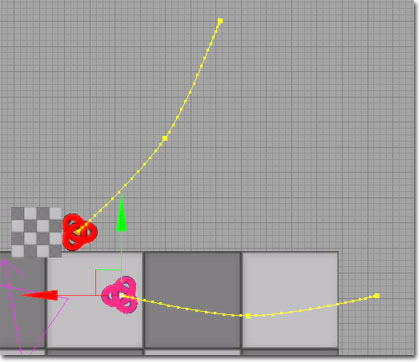 To choose which reference frame a Movement track is working in, right click on the Title header on the left and choose the desired frame from the menu. 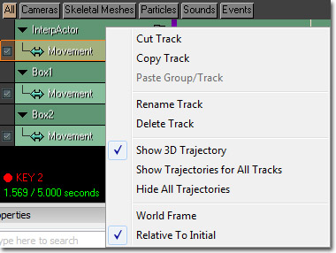Rotation Interpolation
Matinee uses two different rotation interpolation schemes to rotate Actors between keyframes - `Euler' and `Quaternion'. `Euler' is the default and works by interpolating the Yaw, Pitch and Roll of the Actor between the values at keyframes. This allows you to edit the 3 curves for orientation over time in the Curve Editor and control ease-in/ease-out between keyframes. It also supports winding - that is, if you rotate an object multiple times around, the keyframe will store the number of complete revolutions instead of throwing it away. This makes it easy to keyframe something like a screw going into a wall, and also gives you complete control over which direction an Actor takes when moving between two orientations. `Quaternion' interpolation does not support winding, and is essentially linear between keyframes with no support for ease in/out. However, it is more robust and will always find the `shortest' route between two different orientations. You can control which method is being used by toggling the bUseQuatInterpolation option (see below).Rotation Modes
Sometimes you do not want the orientation of an object or camera to be keyframed explicitly. There are 2 different Rotation modes in Matinee at the moment: `Keyframed' is the default, where the orientation of the Actor is determined by keyframes. `Look At Group' specifies that you want to Actor to always point at the Actor controlled by another Group. This is useful when using a camera, as you can have it always look at a particular target wherever it moves. To use, type into the LookAtGroupName field the name of the Group in you wish the Actor to point at, and set the RotMode setting to IMR_LookAtGroup.Movers Relative To Other Groups
It is possible to have a movement track keyframe lookup its transformation info from another group in the same Matinee sequence. This means that a keyframe can point to a moving object and have the movement track interpolate to that position. An example usage case of this would be animating a projectile that always hits a character moving in a non-predictable fashion. To setup a keyframe to lookup its position from another group, right click on the keyframe and choose "Select Transform Lookup Group..." 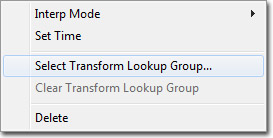 This will show a dialog that lets you choose a group to lookup transform information from. 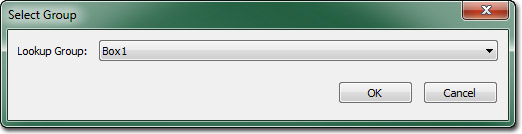 After selecting a group, the keyframe will have the lookup group's name displayed above it. The image below displays 4 key frames that are using the group's Box1 and Box2 to lookup their positioning info. 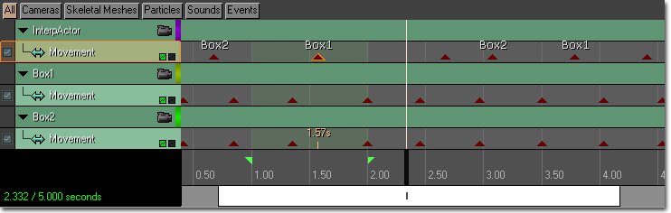 To clear a lookup group for a keyframe, right click on the keyframe and choose "Clear Transform Lookup Group". 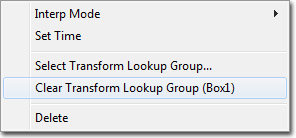 MatineeLookupTest.ut3 is an example map that uses this feature and can be found in the DemoContent/TestMaps folder.Movers Relative To Movers
In UnrealEngine 3 it is possible to keyframe one object to move relative to another. This may be useful when, for example, you want to keyframe the opening of a door on a moving train carriage. To do this, simply set the Base of the Actor you are keyframing to the Actor you wish it to move relative to before you begin keyframing.Path Building
Quite often the initial position for Actors like doors is in the `shut' pose. When building the path network for the AI system, it will not be able to find a path through the doorway because the Mover is in the way. To get around this problem, you can set a specific point in your Matinee sequence to be used when building paths. Simply scrub to the point in the sequence you want the Actors to be in when building paths and choose `Save As Path-Building Positions' from the `Edit' menu. A small blue check will appear on the scrub bar to show the current path-building playback position: 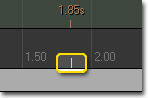 For a Matinee Action to move its Actors when path building takes place, you will also need to check the `bInterpForPathBuilding' flag on the Action itself. Note that you cannot have more than one Matinee Action with bInterpForPathBuilding true acting on a particular Actor, as it is ambiguous which position is desired.Separating Translation and Rotation
It is now possible to "split" a movement track's translation and rotation components so they can be keyframed individually on each axis. This allows finer control over movement track curves. "Splitting" a movement track is an opt-in process. Initially, all movement tracks are combined which means translation and rotation curves have the same number of keyframes and all keyframes exist at the same location in time. To split a movement track simply select "Split Translation and Rotation" from the context menu when right clicking on a movement track. 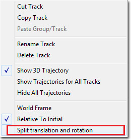 Once you split a movement track it will look like this 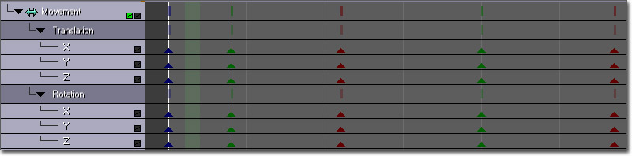 Each axis operates like a unique track so you can have any number of keyframes in them. Translation and rotation components are grouped and can be collapsed when not in use. The vertical bars drawn adjacent to the translation and rotation groups represent a keyframe in one or more of the axes. Selecting a vertical bar will select all keyframes below it. This allows you to select multiple keyframes at once. Note: Quaternion interpolation mode cannot be used when translation and rotation are separated.Normalize Velocity
When working with Bezier curves it is often possible to create situations where objects traveling along a curve speed up or slow down depending on the shape and spacing of keyframes. The normalize velocity option modifies a movement track's translation curves in order to make objects traveling along it move at constant velocity. It is important to understand that constant velocity uses the 3D path that your movement track curves generate. When normalize velocity is used, the 2D curves for each axis of translation may change shape but the 3D path that it generates should not change from the original path. Normalize velocity does not force a curve into constant velocity after the menu option is selected. It simply does a one time adjustment by examining the original curves and modifying them to maintain constant velocity. Any subsequent changes to the curve may cause it to no longer have constant velocity. Notes:- Normalize velocity is only available on movement tracks which have translation and rotation separated (see above).
- It is possible to normalize velocity on segments of a curve rather than the full interval. When this happens the normalize velocity routine adds a keyframe right before and right after the section being normalized. This is done so that the parts of the curve not being normalized remain intact. You may notice "jerky" movements during playback when an object traveling along the curve transitions to and from the normalized velocity section. To fix this you will have to manually adjust the keyframes before and after the normalized segment.
Particle Replay Track
Toggle Track
- Trigger - A one-shot activation of the particle system.
- On - Turns the particle system on.
- Off - Turns the particle system off.
- Activate System Each Update - If true, the track will call ActivateSystem on the emitter each update (old 'incorrect' behavior). If false, the ParticleSystem will only be activated if it was previously inactive.
- Active Condition - Sets when the track should be enabled; always, when gore is enabled, or when gore is disabled.
- Fire Events When Backwards - If true, events for this track will be fired when the Matinee is playing in reverse.
- Fire Events When Forwards - If true, events for this track will be fired when the Matinee is playing forwards.
- Fire Events When Jumping Forward - If true, allows all of the events in the track to be fired even if the Matinee is skipped.
Color Property Track
- Active Condition - Sets when the track should be enabled; always, when gore is enabled, or when gore is disabled.
- Curve Tension - Controls how 'sharp' the corners in the animation curve are, when not manually adjusting keyframe tangents.
- Property Name - Read-only variable indicating the name of the property in the connected actor which this track will modify over time.
Sound Track
- Active Condition - Sets when the track should be enabled; always, when gore is enabled, or when gore is disabled.
- Continue Sound On Matinee End - If true, the sounds being played on this track will not be cut off if their duration continues beyond the end of the Matinee sequence. They will continue to play until the sound ends.
- Curve Tension - Controls how 'sharp' the corners in the animation curve are, when not manually adjusting keyframe tangents.
- Play On Reverse - If true, the sounds being played on this track will only play when the Matinee sequence is played in reverse. They will not play when the sequence is playing forwards. An example of using this feature would be to have different opening and closing sounds for movers.
- Suppress Subtitles - If true, any subtitles associated with the sounds being played by this track will not be displayed.
Vector Material Param Track
- Active Condition - Sets when the track should be enabled; always, when gore is enabled, or when gore is disabled.
- Curve Tension - Controls how 'sharp' the corners in the animation curve are, when not manually adjusting keyframe tangents.
- Materials - List of materials whose parameters will be modified and references to those materiasl that need to be given MaterialInstanceConstants in the level, compiled at save time.
- Param Name - Name of the parameter in the materials to modify.
Vector Property Track
- Active Condition - Sets when the track should be enabled; always, when gore is enabled, or when gore is disabled.
- Curve Tension - Controls how 'sharp' the corners in the animation curve are, when not manually adjusting keyframe tangents.
- Property Name - Read-only variable indicating the name of the property in the connected actor which this track will modify over time.
Visibility Track
- Active Condition - Sets when the track should be enabled; always, when gore is enabled, or when gore is disabled.
- Curve Tension - Controls how 'sharp' the corners in the animation curve are, when not manually adjusting keyframe tangents.
- Property Name - Read-only variable indicating the name of the property in the connected actor which this track will modify over time.
AI Group
AIGroupPreviewPawnClassName="MyGame.DefaultGamePawn"
There are more configurable information you need to set up.
AIGroupPreviewAnimTreeName="EditorMeshes.PreviewTree"
DefaultAnimSlotName="Custom_FullBody"
AIGroupPreviewAnimTreeName is the preview tree in editor if preview pawn does not have AnimTreeTemplate and DefaultAnimSlot is the name of slot node for AnimControlTrack.
Other than DefaultAnimSlotName, it is all preview information. During run-time, we don't change AnimTree but use current AnimTree of the spawned actor with the slot node that its NodeName is DefaultSlotName.
So you need to make sure the slot node you specify above exists in the AnimTree as well as preview AnimTree.
Once this set up is done, you should be able to preview everything fine with the Pawn you select.
Preview does not change ingame actor. During run time, it will use the actor that's connected to the variable of the group in Matinee. Please make sure that this is either Pawn or Controller class.
One last thing to note is that if AIs in game decided to do something else during the play, there is nothing blocking them from doing that in Matinee code.
Matinee code handles AI exactly same as SkeletalMeshActor. So you'd like to make sure your AI does not try to do anything else during this time of period.
If that's the case, you'll see race condition happening between Matinee and in-game.
event MAT_BeginAIGroup(vector StartLoc, rotator StartRot);
event MAT_FinishAIGroup();
Use these event to handle AI's behavior.
The Director Group
Director Track
The Director Track allows you to attach the players view to different Actors as the sequence proceeds. When you add a new keyframe to the Director track, a combo box will allow you to choose which Group to assign the view to at that point. Colored bars on the Director track allow you to see which Group the camera is viewing through at each point in the sequence - the color corresponds to the editor Group color of each group. If you want to return the camera to the player, simply add a cut back to the Director Group itself. Think if the Director Group as a special group relating to the 'player'. The view will automatically return to the player at the end of the sequence otherwise. 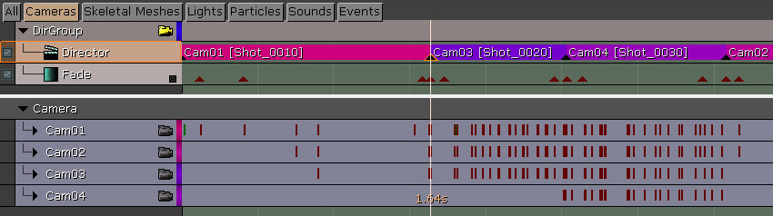Shots
Director tracks are broken up into named shots, just as you would encounter in standard film-making. Each key denotes a new shot and the shot lasts for the duration of that key. Shot names can be displayed in both the editor viewport when previewing the Matinee and in-game while the Matinee is playing. Viewport Preview: 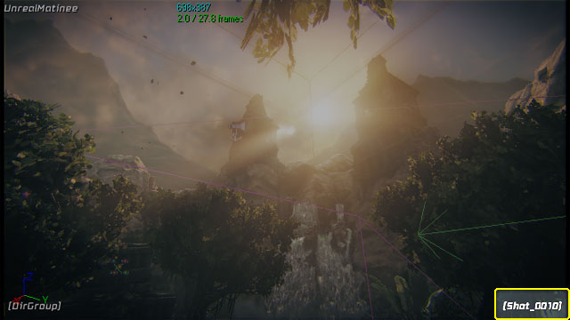 In-Game Playback: 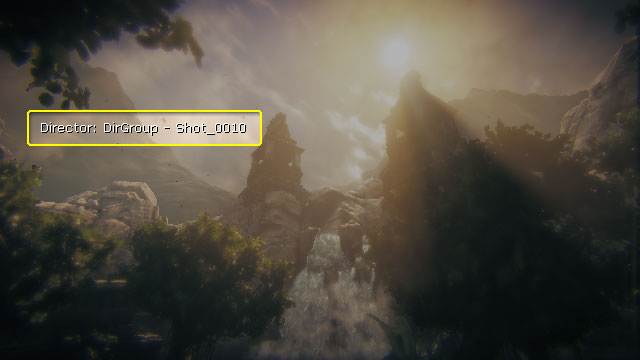 Note: Display of shot names in-game during Matinee playback requiresbShowDirectorInfoHUD=true in the *Game.ini file and the gametype to support displaying Kismet messages (via calling DisplayKismetMessages() in the draw loop).
By default, shots are numbered according to their position in the timeline. Adding a new key between two existing keys will cause the shot associated with the new key to be numbered between the existing shots.
Existing keys:
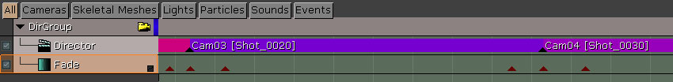
After adding new key:
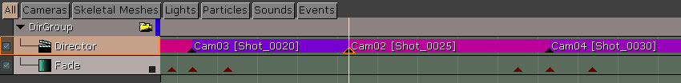
Shots can be renamed through the context menu.
- The existing shot name:
- Select the key the shot is associated with, right-click on it, and choose Rename in the context menu.
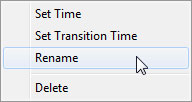 - Enter a new number for the shot in the Set Camera Shot Number dialog:
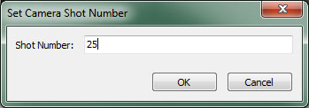 - The shot is now renamed:
Fade Track
To control fading of the scene to a particular color, you can use a Fade Track. This Track works similarly to the Float Property Track, but you must use the Curve Editor to control the amount of fading over time. When the Fade amount is 0.0, there is no fading, and when its 1.0 the scene is completely faded out.Slomo Track
One special effect you can apply to a cinematic is to slow down the game speed. This track again works similarly to the Float Property track, and you use the Curve Editor to modify the slow-motion over time. A Slomo factor of 1.0 will use the default game speed, a lower number will reduce game speed and a higher number will speed up the game. Slomo affects all game actions, physics, particles etc. as well the speed the sequence itself proceeds.Audio Master Track
The Audio Master track gives control over the overall volume and pitch of the game's audio. When an Audio Master track is added to the Director Group, it has one default key at the beginning of the sequence whose InterpMode is Linear. Adding new keys allows you to modify the volume and/or pitch over the course of the sequence. Properties- Active Condition - Sets when the track should be enabled; always, when gore is enabled, or when gore is disabled.
- Curve Tension - Controls how 'sharp' the corners in the animation curve are, when not manually adjusting keyframe tangents.
Color Scale Track
The Color Scale track modifies the color scale of the rendered scene output, allowing you to tint the scene. Properties- Active Condition - Sets when the track should be enabled; always, when gore is enabled, or when gore is disabled.
- Curve Tension - Controls how 'sharp' the corners in the animation curve are, when not manually adjusting keyframe tangents.